Oscar Niemeyer buildings 54
Sort
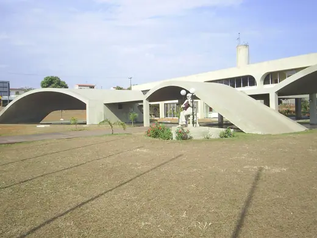
Casa do CantadorYear unavailable · Ceilândia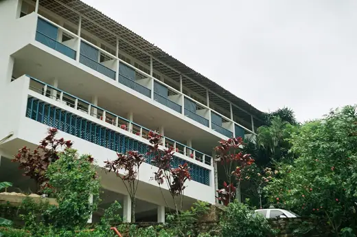
Grande Hotel de Ouro Preto1940 · Ouro Preto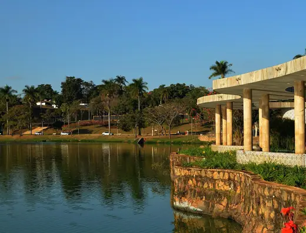
Casa do Baile (Pampulha Dance Hall)1943 · Belo Horizonte Pampulha Art Museum (former Casino)1943 · Belo Horizonte
Pampulha Art Museum (former Casino)1943 · Belo Horizonte United Nations Secretariat Building1952 · New York
United Nations Secretariat Building1952 · New York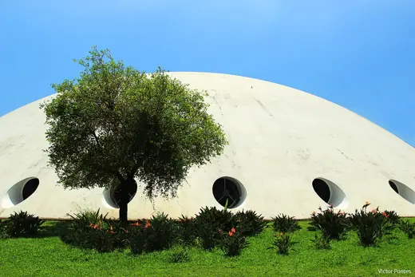
Oca, Ibirapuera Park1954 · São Paulo Catetinho1956 · Brasília
Catetinho1956 · Brasília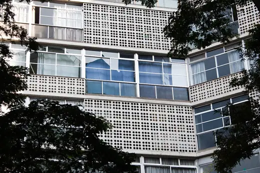
Eiffel Building1956 · São Paulo Igrejinha Nossa Senhora de Fátima1958 · Brasília
Igrejinha Nossa Senhora de Fátima1958 · Brasília Palácio da Alvorada1958 · Brasilia
Palácio da Alvorada1958 · Brasilia Edifício Niemeyer1960 · Belo Horizonte
Edifício Niemeyer1960 · Belo Horizonte Palácio do Planalto1960 · Brasilia
Palácio do Planalto1960 · Brasilia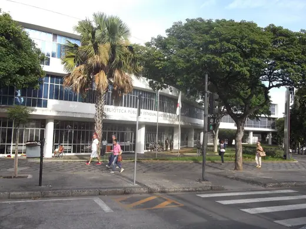
Luiz de Bessa State Public Library1961 · Belo Horizonte Copan Building1966 · Sao Paulo
Copan Building1966 · Sao Paulo Itamaraty Palace1970 · Brasilia
Itamaraty Palace1970 · Brasilia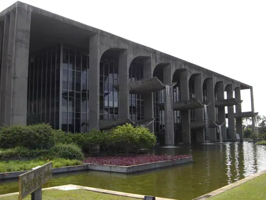
Palácio da Justiça (Ministry of Justice), Brasília1972 · Brasília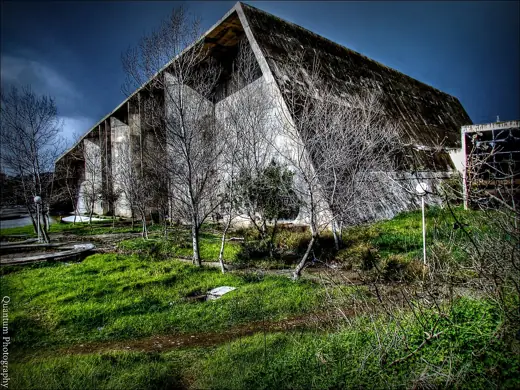
University of Science and Technology, Houari Boumediene1974 · Bab-Ezzouar Rachid Karami International Fair1975 · Tripoli
Rachid Karami International Fair1975 · Tripoli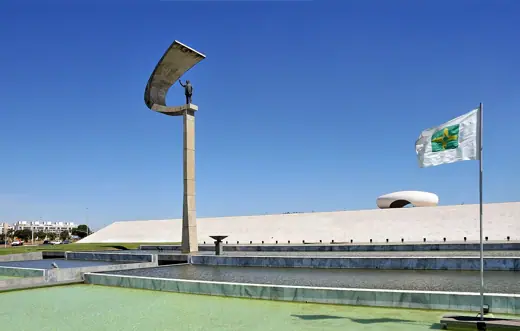
Memorial JK1981 · Brasília Tancredo Neves Pantheon of the Fatherland1986 · Brasília
Tancredo Neves Pantheon of the Fatherland1986 · Brasília Latin America Memorial1989 · São Paulo
Latin America Memorial1989 · São Paulo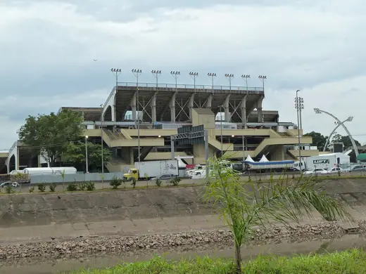
Anhembi Sambadrome1996 · São Paulo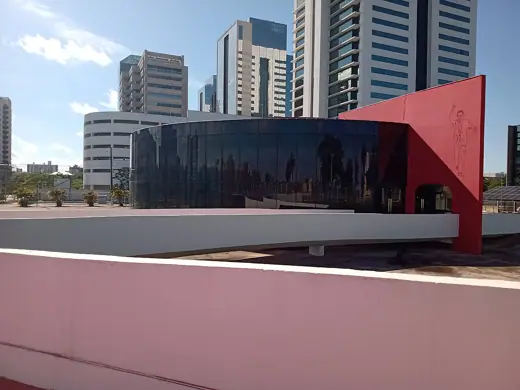
Memorial Luiz Carlos Prestes1998 · Porto Alegre Ibirapuera Auditorium2005 · São Paulo
Ibirapuera Auditorium2005 · São Paulo National Museum of the Republic2006 · Brasília
National Museum of the Republic2006 · Brasília Oscar Niemeyer International Cultural Centre2011 · Avilés
Oscar Niemeyer International Cultural Centre2011 · Avilés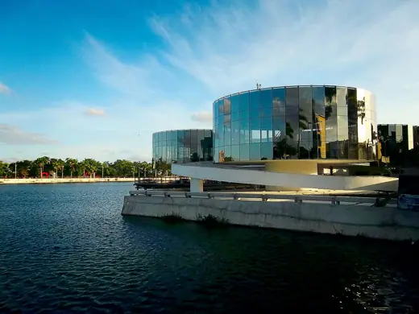
Museum of Popular Arts of Paraíba2012 · Campina Grande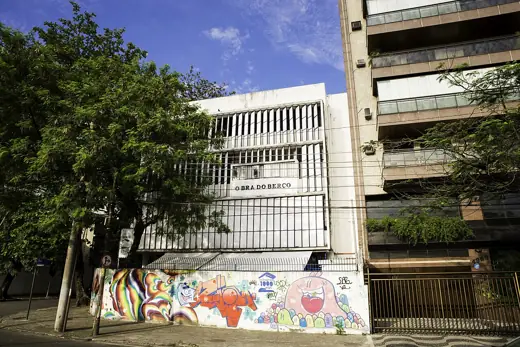
Obra do BerçoYear unavailable · Rio de Janeiro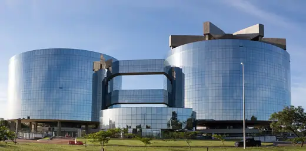
Procuradoria Geral da RepúblicaYear unavailable · Brasília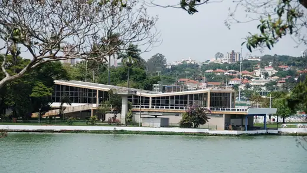
Iate Tênis Clube, Pampulha1942 · Belo Horizonte Church of Saint Francis of Assisi, Pampulha1943 · Belo Horizonte
Church of Saint Francis of Assisi, Pampulha1943 · Belo Horizonte Gustavo Capanema Palace1945 · Rio de Janeiro
Gustavo Capanema Palace1945 · Rio de Janeiro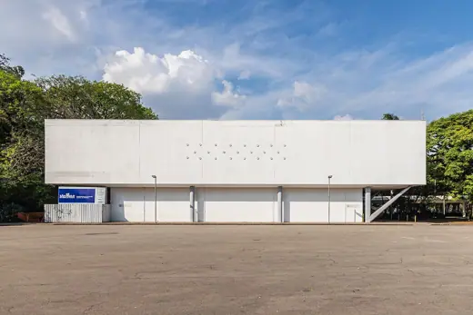
Pavilhão Padre Manoel da Nóbrega1953 · São Paulo Bienal Pavilion (Pavilhão Ciccillo Matarazzo)1954 · São Paulo
Bienal Pavilion (Pavilhão Ciccillo Matarazzo)1954 · São Paulo Edifício Triângulo1955 · São Paulo
Edifício Triângulo1955 · São Paulo Itatiaia Building1957 · Campinas
Itatiaia Building1957 · Campinas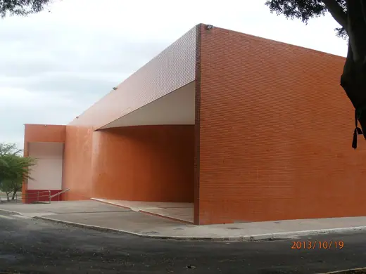
Cine Brasília1960 · Brasília National Congress of Brazil1960 · Brasilia
National Congress of Brazil1960 · Brasilia Supreme Federal Court1960 · Brasília
Supreme Federal Court1960 · Brasília Claudio Santoro National Theatre1966 · Brasilia
Claudio Santoro National Theatre1966 · Brasilia Cathedral of Brasília1970 · Brasília
Cathedral of Brasília1970 · Brasília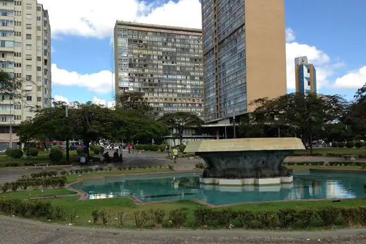
Conjunto JK (Conjunto Governador Kubitschek)1970 · Belo Horizonte French Communist Party Headquarters1971 · Paris
French Communist Party Headquarters1971 · Paris University of Constantine1972 · Constantine
University of Constantine1972 · Constantine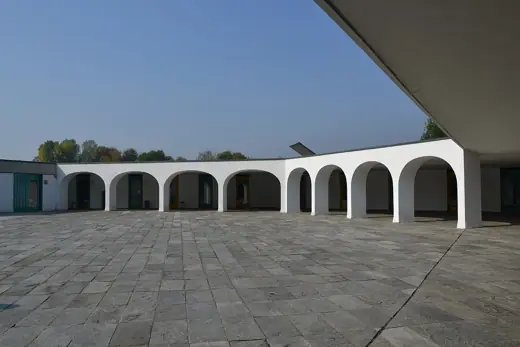
Mondadori Palace1975 · Segrate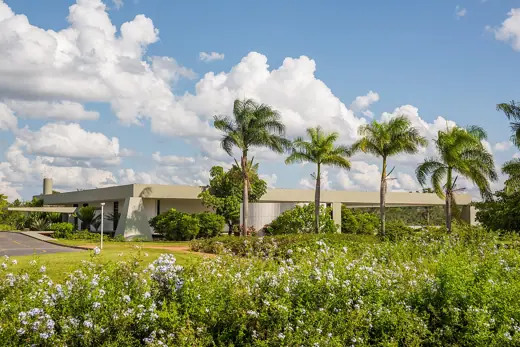
Palácio do Jaburu1977 · Brasília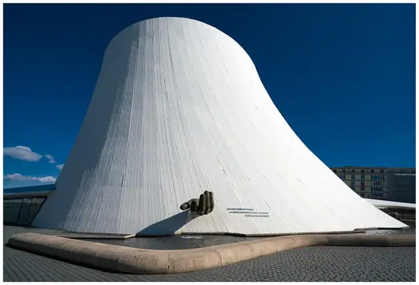
Le Volcan1982 · Le Havre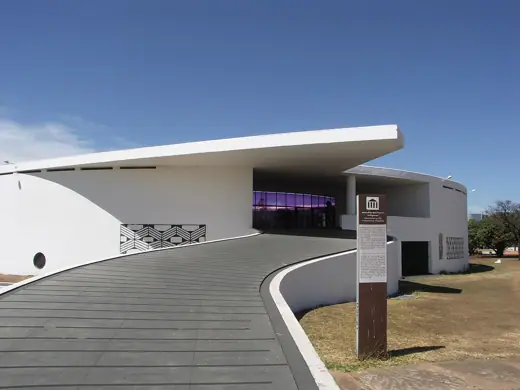
Memorial dos Povos Indígenas1987 · Brasília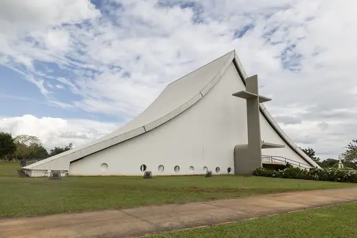
Military Cathedral of St. Mary Queen of Peace, Brasília1994 · Brasília Niterói Contemporary Art Museum1996 · Niterói
Niterói Contemporary Art Museum1996 · Niterói Oscar Niemeyer Museum2002 · Curitiba
Oscar Niemeyer Museum2002 · Curitiba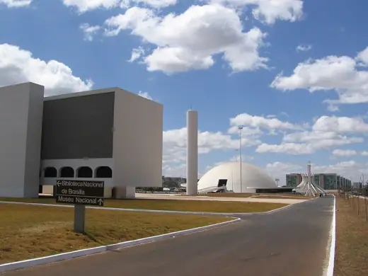
Cultural Complex of the Republic2006 · Brasília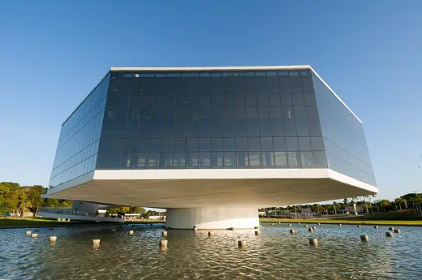
Estação Cabo Branco – Ciência, Cultura e Artes2008 · João Pessoa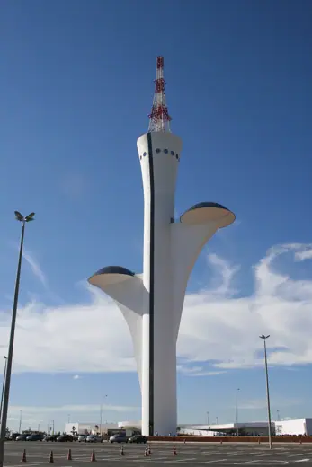
Brasília Digital TV Tower2012 · Brasília